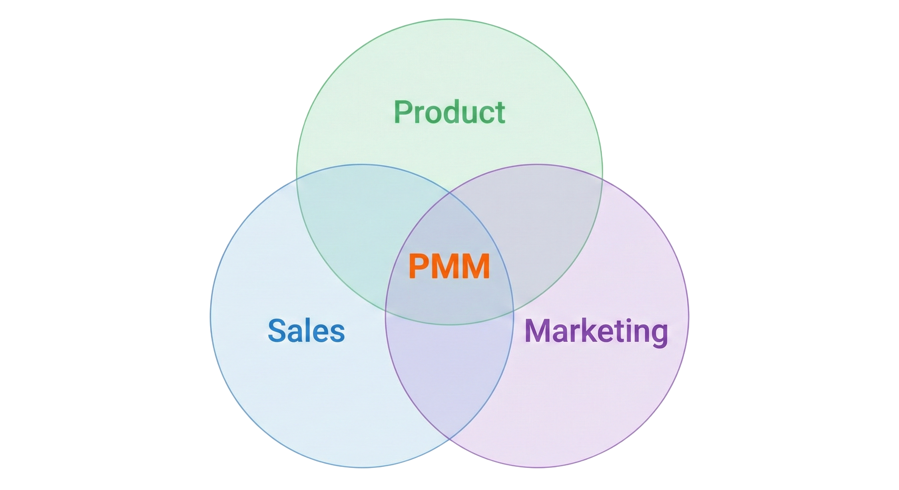

I love the product marketing discipline. It brings together a number of needs, requirements and capabilities to challenge you in ways I've not found in any other discipline. It’s a gross simplification, and there are other business groups also, but essentially this is what happens in most organizations …
I have had the benefit of learning the PMM craft at companies with many years of iteration and honing, and now enjoy imparting that knowledge and helping others learn and leverage the impact that great product marketing can have.
So what is product marketing? Here's my take …
- Influence product strategy and roadmap. Key word is influence. These workstreams are typically the accountability of engineering/product, who are influenced by other strategic groups. PMM has a specific value in bringing a broad set of inputs from the market, sales and customer feedback, distilled into themed and prioritized asks.
- Create the market narrative for products. This is a wholly PMM accountability, and inverse to the first point, we are influenced by others from product, sales and Marketing (big M). We write the long form narrative, craft the messages, the value customers get, distill the pitch decks, the product showcase and all of the enablement assets that the business needs to influence the market and win business.
- Orchestrate key workstreams. Key word is orchestrate, PMM is not PMO! But we are in the position to bring together a diverse set of people and teams to perform two critical cross-discipline functions (amongst others) … Roadmap, and Product Launch.
Product Marketing can and is many things … there are peripheral activities that are sometimes included such as product naming, business models and packaging. But to me, the 3 elements of influencing product, creating narratives and orchestrating roadmap and launches, those are fundamentals that must be defined and agreed as team charter.
Speaking of which … how do you know you need “product marketing”?
There absolutely is a state of “not ready” when it comes to product marketing. In the early stages of a company, until you have something you want to sell (or be adopted by someone or some business), then product marketing has little to no value.
But when you reach that point, the sooner you can engage a PMM leader the better. It takes time to listen to the needs of the business, capture the intent, understand the dynamics, establish the frameworks, associate the charter.
The last thing I'll leave you with, is don't establish PMM and then don't allow them to do what it is designed to do. If the Venn Diagram above tells you anything, it is that the absence of buy-in and alignment of any of those circles means the discipline will struggle and in all likelihood struggle to deliver on the desired impact.
Any nobody enjoys that outcome :)